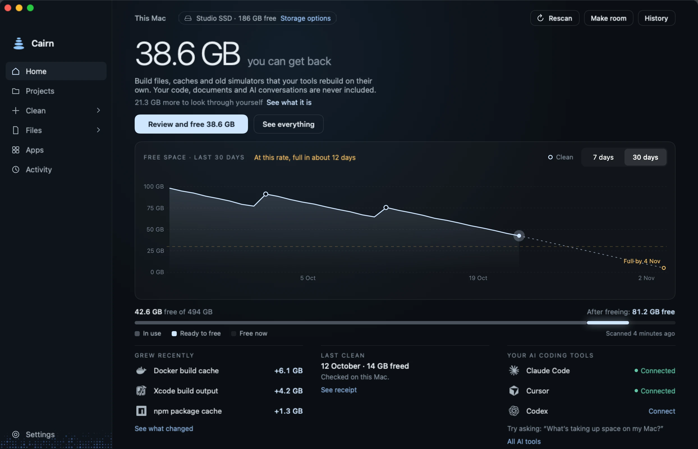

Cairn finds the junk in your coding projects.
Review build files and caches, with optional AI-tool connections. Known working locations have protection checks.
- 38.6 GB
- illustrative scan, not a benchmark
- AI tools
- optional local connections
- Review first
- check each path and requirement
Build files, caches and old installs pile up quietly. Cairn identifies candidates; you review their paths, requirements and removal methods.
Connect Claude Code, Codex or Cursor to inspect storage. Cleaning needs separate permission; the client may share results with its provider.
An illustrative scan
0.0GB
What a scan could find. Example figures. Your results will vary.
 Xcode build files14.2 GB
Xcode build files14.2 GB Docker build cache9.8 GB
Docker build cache9.8 GB- node_modules9.5 GB
- npm cache5.1 GB
An illustrative disk
A view of your disk. Inspect candidates and scan coverage.
Scroll to see the example
Illustrative change. Actual space varies. Trash alone frees none.
Optional AI-tool connections
Just ask. In the tools you already use.
Connect Claude Code, Codex or Cursor to inspect storage. This conversation shows sample data.
- Sizes, with their limits. Estimates and partial scans are labelled.
- Cleaning is off by default. Choose review or permitted automation.
- Known working locations have protection checks.
The app
Then review what can go, in one calm place.


Sample data. Protection has limits.
The rest of your Mac
Built for more than a clean build.
Cairn looks after the apps around your code too, with the same care.
Browsers
Review rebuildable browser caches.
Creative apps
Review app caches. Final Cut manages its own libraries.
Everyday apps
Update downloads and caches from Zoom, Teams, Spotify and others.
Chat and notes
Review known Slack, Discord and Notion caches.
Local AI models
Eligible models use Trash. Manage Ollama models in Ollama.
Plus large-file, duplicate and app-leftover review, and copies to eligible encrypted APFS drives with originals kept.
What Cairn touches
What can go, and what needs care.
Review manual cleanups first. Scheduled rules and AI-tool cleaning need separate permission.
Review the removal method
Eligible caches may be deleted or sent to Trash. Tool results vary; only a fresh reading shows available space.
- Recognised build folders, such as node_modules, target, .venv and DerivedData, subject to rebuildability checks
- Package caches for npm, Yarn, pnpm, pip, Cargo, Go, Gradle and Homebrew
- Xcode build data, old device support, and simulators for versions you no longer have
- Docker cleanup commands; OrbStack and Colima disk guidance, not direct virtual-disk deletion
- App, browser and creative app caches, and old logs
- Git maintenance candidates need separate review. Pruning can remove unreachable objects; it is not reversible.
- Local Time Machine snapshot removal uses macOS’s tool and reduces local recovery history. Savings are unknown.
Moved to the Trash
Eligible selected files can go to Trash. Put Back needs a matching recorded item still there; Trash does not free space.
- Large old files in Downloads, Desktop and Movies
- Installers for apps you already have
- Duplicate copies, with the copy you choose kept
- Apps you remove, and leftovers from apps already gone
- Eligible local AI models; Ollama offers a command to copy
Known protected locations
Known paths are checked, not every valuable file. Inspect unfamiliar locations and keep backups.
- Known source-control paths; review generated folders separately
- Known coding-session paths for Claude Code, Codex, Cursor and ChatGPT
- Your Photos library
- Known iCloud and macOS CloudStorage locations
- Your emails and Messages history
- Known credential paths and recognised secret and database files
- Xcode Archives, which you need to read crash reports
- macOS system files
Detected in-use items and recent build output are skipped. Move to Trash applies to eligible files, not every tool action. Ruby gem cleanup is advice only.